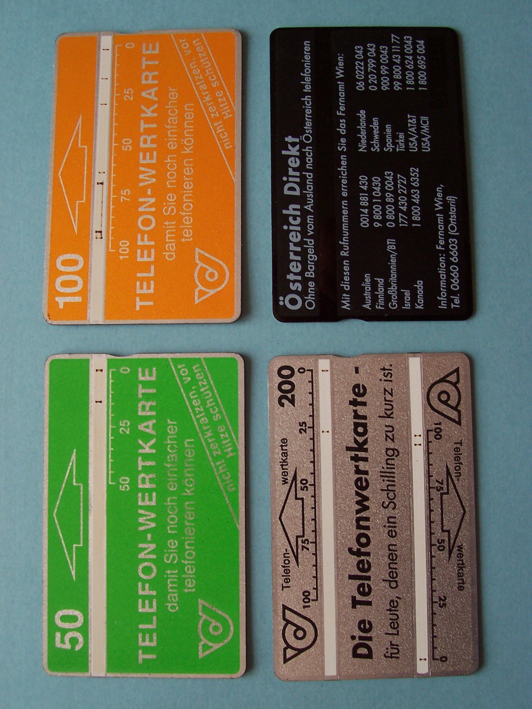

Optel Optical Phonecard
A prepaid card whose value is burned away by the payphone, one dark unit at a time

Overview
The optical phonecard — branded 'Optel' in Austria and known in the collector world simply as the optical card — is a stored-value payphone card whose credit is carried in a thin embossed optical structure printed on the card's surface. Instead of storing its balance on a magnetic stripe, a chip, or a central database, the card carries value as physical matter that the payphone destroys as you use it. When you insert the card, the payphone's thermal head heats and burns the embossed optical structure unit by unit, leaving a permanent dark mark on a white strip that runs along the top of the card. The user reads the remaining balance directly with the eye: a strip filled with dark marks means the card is spent. The system was designed and produced by Landis+Gyr and Sodeco, two Swiss companies, and the first optical phonecards were successfully introduced in 1977 in Belgium. It proved highly secure and difficult to hack — the value physically vanishes, and a forged card would have to replicate the optical structure and its precise burn pattern. Optical cards spread across many countries and were still in use in Austria, Israel, and Egypt when the last Landis+Gyr production factory closed in May 2006. In Austria the cards were sold by the post/PTV and Telekom Austria as 'Telefonwertkarten' in denominations of 50, 100, and 200 Schilling, with the first Austrian value-card payphone entering service in 1981; the white strip on top existed purely so the user could read how much credit remained, and after the 2001 switch to the euro the displays were never even updated, continuing to show the old Schilling unit counts.
Deep dive
The defining mechanic is that the stored value is destroyed rather than decremented. A chip card or magnetic-stripe card has a reader compute a new balance and write it back; a remote-memory calling card checks a database. The optical card needs none of that. Its embossed optical structure is physically heated and destroyed by the payphone's thermal head as each unit is used, and the burn leaves a visible black-and-brown mark on the white balance strip. The card IS the accounting. Nothing hidden, nothing rewritable, nothing hackable without replicating a per-card optical structure and its burn history. The German-language description of the very card shown here reads: 'the image shows three TWK [Telefonwertkarten] of 50, 100 and 200 Schilling, plus one back. On the white strip, you can see by the black, brownish marks how much remaining credit is still on the card. When the strip is at 0, the card is empty.'
Where modern stored-value systems hide their balance behind PINs, menu screens, and central databases, the optical card shows it constantly and honestly on its own face. The white strip on top exists solely so the user can read the remaining credit — an interaction model where the readout is physically inseparable from the medium of value. This is the opposite of the museum's remote-memory calling cards (where a PIN unlocks a database number) and closer in spirit to a gas gauge: the thing being measured is visible in its own substance. It is also the museum's clearest 'destructive readout' — the act of using the card permanently alters and eventually annihilates it.
Optical cards arrived in Belgium in 1977, decades before chip cards, and outlived them in some places. Chip smartcards launched at scale in 1986 in Germany and France and eventually displaced optical cards worldwide, yet Landis+Gyr kept producing them until the last factory closed in May 2006, with Austria, Israel, and Egypt still using them. In Austria the cards survived the switch from Schilling to euro in 2001 — the card values were reprinted in euros but the payphone displays were never updated and continued to show '50' or '100' unit counts. The physical ritual of burning your phone credit into a card outlived both the currency that priced it and the switch to chip cards.
The museum's other printed-media and stored-value devices read value or data by scanning: Cauzin Softstrip and Pioneer LaserBarcode are machine-scanned by wands, the TI Magic Wand reads barcodes, and the iButton is a 1-Wire touch memory chip. The optical phonecard is different on two axes at once. First, its value lives in physical, burnable matter rather than magnetically or electronically encoded bits — the accounting is material, not digital. Second, the readout is designed for human eyes, not a machine: the balance is written onto the card's own face by the act of spending it. It is the museum's only stored-value medium that destroys itself as it is used, and its only payment artifact whose balance you can read without any device at all.
Team & pioneers
- Landis+Gyr. Swiss manufacturer of the optical card system; produced optical phonecards from the late 1970s until its last factory closed in May 2006
- Sodeco. Swiss partner/manufacturer alongside Landis+Gyr for the optical card system
- PTV / Telekom Austria (Austria). Operator that sold the cards as 'Telefonwertkarten'; first Austrian value-card payphone entered service 1981